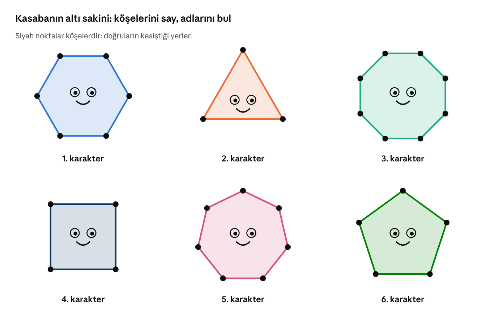
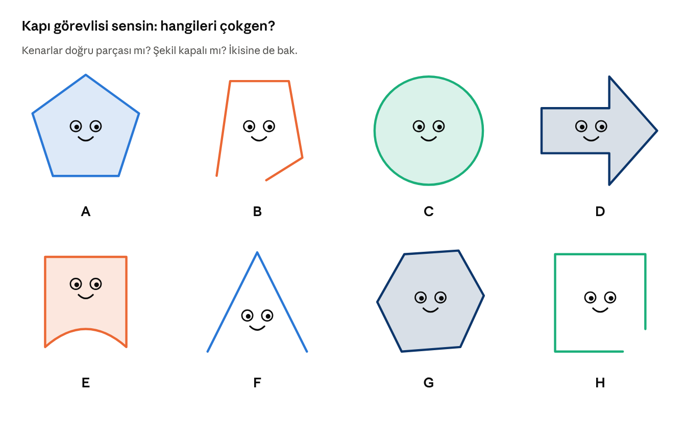
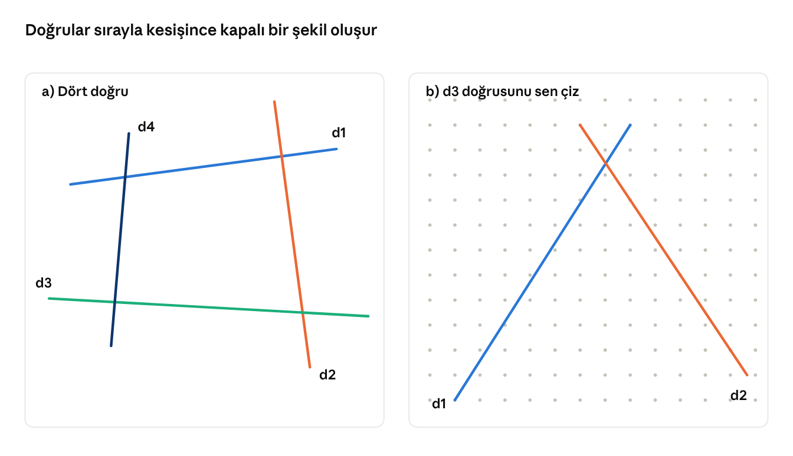

Çokgen Kasabası Çalışma Kağıdı
Adı Soyadı: ............................................ Sınıfı / No: .............. Puan: ........ / 100
Kazanım (MAT.5.3.5): Çokgenleri düzlemde ardışık olarak kesişen doğruların oluşturduğu kapalı şekiller olarak yorumlayabilme.
Çokgen Kasabası'na hoş geldin! Kasabanın sakinleri Üçgen Ümit, Dörtgen Defne, Beşgen Bora, Altıgen Arya, Yedigen Yakup ve Sekizgen Selin. Hepsi düzlemde sırayla kesişen doğrulardan doğdu. Etkinlikleri tamamlayarak onlara yardım et.
Hatırla: Çokgen; en az üç doğru parçasından oluşan, kapalı bir şekildir. Doğrular sırayla kesişir ve son doğru ilk doğruyu keser. Doğruların kesiştiği noktalar çokgenin köşeleridir.
Etkinlik 1: Karakterleri tanı (20 puan)
Aşağıdaki karakterlerin kenarlarını ve köşelerini say. Tabloyu doldur.

Etkinlik 1 · altı çokgen karakter
Karakter | Kenar sayısı | Köşe sayısı | Çokgenin adı | Kaç doğrudan oluştu? |
|---|---|---|---|---|
1. karakter | ||||
2. karakter | ||||
3. karakter | ||||
4. karakter | ||||
5. karakter | ||||
6. karakter |
Tabloya bak: Bir çokgenin kenar sayısı, köşe sayısı ve onu oluşturan doğru sayısı arasında nasıl bir ilişki var?
..................................................................................................................................
Etkinlik 2: Kapı görevlisi (24 puan)
Kasabaya yalnızca çokgenler girebilir. Her şekil için çokgen olup olmadığını yaz ve nedenini açıkla.

Etkinlik 2 · sekiz şekil
Şekil | Çokgen mi? (Evet / Hayır) | Neden? |
|---|---|---|
A | ||
B | ||
C | ||
D | ||
E | ||
F | ||
G | ||
H |
Etkinlik 3: Doğrulardan çokgene (24 puan)
Kasabaya yeni bir arkadaş geliyor. Onu doğrularla sen oluşturacaksın.

Etkinlik 3 · doğrulardan çokgene
a) panelinde:
- d1 ile d2'nin kesiştiği noktayı boya ve A yaz. Sonra d2 ile d3'ün kesişimine B, d3 ile d4'ün kesişimine C yaz.
- Son doğru d4, hangi doğruyu kesti? Bu noktaya D yaz. Cevap: ................
- A, B, C ve D noktaları arasındaki kapalı bölgeyi boya. Oluşan çokgenin adı: ................
b) panelinde:
- d1 ve d2 doğruları kesişiyor. Cetvel kullanarak bir d3 doğrusu çiz: d3 hem d2'yi hem de d1'i kessin.
- Oluşan kapalı şekli boya, ona bir yüz ve bir isim ver. Adı: ................
- d3, d1'i kesmeseydi ne olurdu? ......................................................................................
Etkinlik 4: Sekizgen Selin'in bilmeceleri (20 puan)
Boşlukları doldur. Kelime kutusu: kapalı · köşe · üç · ilk · doğru parçası
- Bir çokgen oluşturmak için en az .................. doğru gerekir.
- Çokgenin kenarları birer .......................... olmalıdır.
- Doğruların ardışık kesiştiği noktalara çokgenin .................. denir.
- Çokgenin kapanması için son doğru .................. doğruyu kesmelidir.
- Çokgen, düzlemde .................. bir şekildir.
Doğru ise D, yanlış ise Y yaz.
İfade | D / Y | |
|---|---|---|
1 | Çember bir çokgendir. | |
2 | Altıgen Arya'nın 6 kenarı ve 6 köşesi vardır. | |
3 | İki doğru ardışık kesişerek bir çokgen oluşturabilir. | |
4 | Beş doğru ardışık kesişir ve son doğru ilkini keserse beşgen oluşur. | |
5 | Kenarlarından biri eğri olan kapalı bir şekil de çokgendir. |
Etkinlik 5: Kasabanın yeni sakini (12 puan)
Defterine cetvelle beş ya da daha fazla doğru çiz. Her doğru bir öncekini kessin, son doğru da ilk doğruyu kessin. Oluşan çokgeni boya, ona yüz, kollar ve ayaklar çiz.
- Karakterimin adı: ..................................................
- Kaç doğru kullandım? ........ Kaç köşesi var? ........
- Karakterim kendini nasıl tanıtır? "Merhaba, ben .............................................................................................................................."
Kendimi değerlendiriyorum:
- ☐ Çokgenin kapalı bir şekil olduğunu biliyorum.
- ☐ Doğruların ardışık kesişerek çokgen oluşturduğunu açıklayabiliyorum.
- ☐ Doğrular çizerek istediğim çokgeni oluşturabiliyorum.